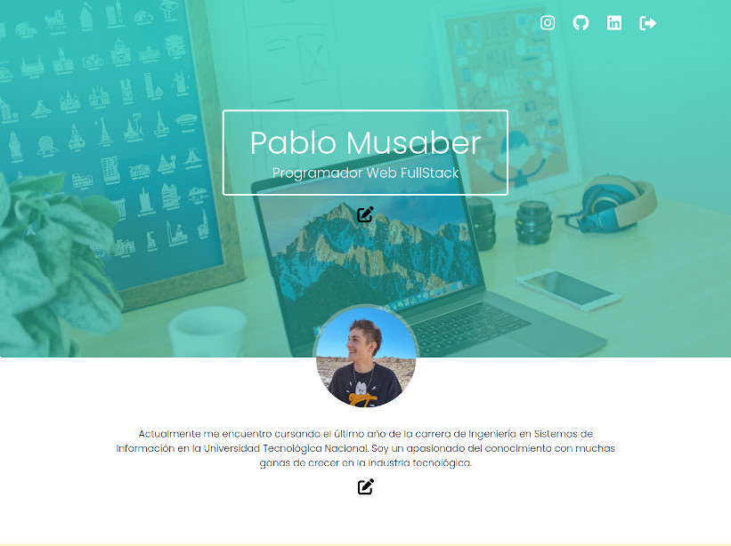
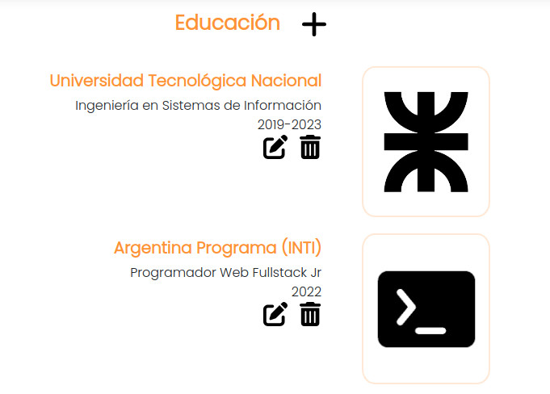

Portfolio Web

Este sitio fue desarrollado como parte del curso Argentina Programa dictado durante el año 2022, con la estructura y requisitos solicitados. El objetivo era construir un portfolio personal que funcione como plataforma web, donde el administrador pueda iniciar sesión y realizar todas las modicaciones deseadas a la información presentada dentro del sitio.
El frontend de la plataforma fue realizado con Angular, mientras que el backend corresponde a una API desarrollada en Java con Spring Boot y utiliza una base de datos PostgreSQL.
Como se observa en la primera imágen, al acceder como admin, se pueden observar botones que permiten editar y eliminar la información en cada una de las secciones del portfolio.

A pesar de que no esté en uso, la plataforma se encuentra desplegada . El frontend se encuentra alojado en Firebase, mientras que el backend funciona gracias a los servicios de Railway.